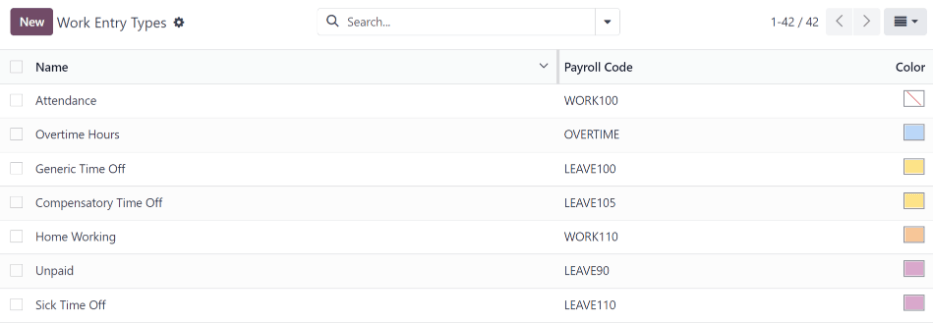
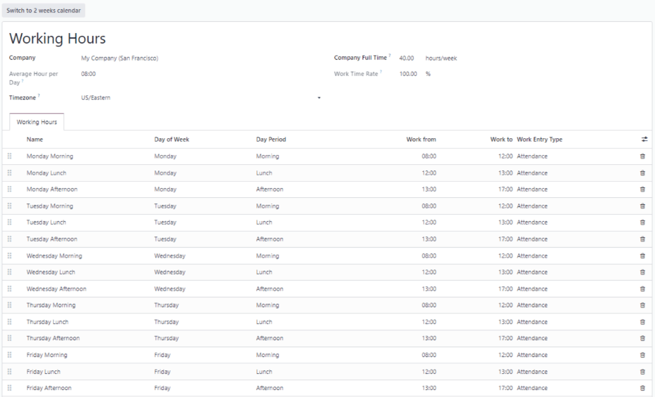
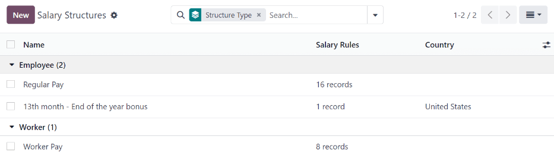
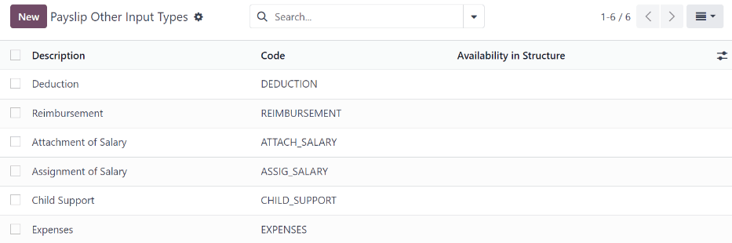
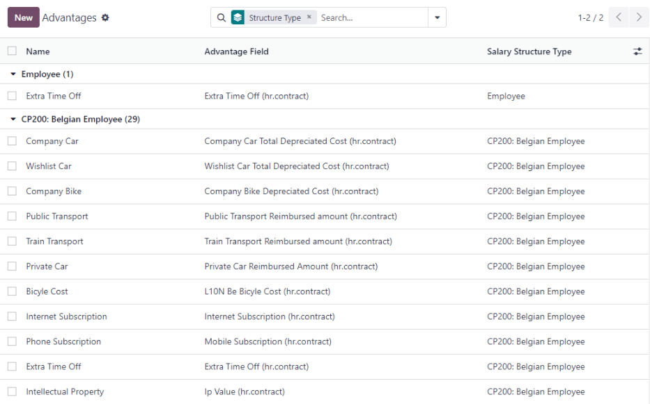
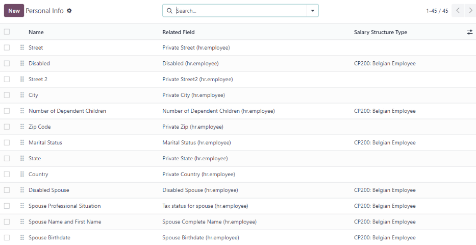
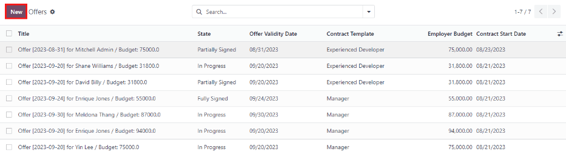

Nómina¶
La aplicación Nómina de Odoo se utiliza para procesar entradas de trabajo y crear recibos de nómina para los empleados, estos pueden incluir su paga regular y comisiones. Además, funciona en conjunto con otras de nuestras aplicaciones como Empleados, Hojas de horas, Tiempo personal y Asistencias.
La aplicación Nómina ayuda a asegurar que no haya problemas o conflictos al validar entradas de trabajo, gestiona localizaciones específicas de cada país para garantizar que los recibos de nómina cumplan con reglas e impuestos locales y permite realizar asignaciones salariales. Su configuración es fundamental para asegurar el procesamiento preciso y oportuno de los recibos de nómina.
Ajustes¶
Para acceder a los ajustes, vaya a . Aquí seleccionará si los recibos de nómina se registran en contabilidad y si se crean pagos SEPA.
Los ajustes de localización se configuran desde la pantalla de ajustes. Las localizaciones son ajustes específicos para cada país. Se preconfiguran en Odoo al crear una base de datos y representan todos los impuestos, tarifas y subsidios para ese país en particular. La sección localización en los ajustes incluye una vista detallada de todos los beneficios que se proporcionan a los empleados.

Cualquier localización específica para un país se configura en la sección correspondiente en la pantalla de ajustes. Todos los elementos de localización se completan previamente al especificar el país durante la creación de la base de datos. No recomendamos modificar los ajustes de localización a menos que sea necesario.
Nota
Odoo es capaz de gestionar una configuración multiempresa. Por lo general, esto ocurre cuando hay una empresa principal o una ubicación de oficina, como una sede, y hay otras oficinas o sucursales alrededor del país o del mundo que le pertenecen a la empresa principal o sede. En Odoo, cada empresa, incluida la sede, se configuraría como su propia empresa o sucursal con el método multiempresa.
Cada empresa puede tener ajustes de localización distintos configurados para esa empresa en específico, ya que las ubicaciones de las empresas pueden variar y estar ubicadas en cualquier parte del mundo, por lo que las reglas y las leyes serían distintas. Para obtener más información sobre empresas, consulte esta documentación sobre cómo configurarlas.
Entradas de trabajo¶
Una entrada de trabajo es un registro individual en la hoja de horas de un empleado. Las entradas de trabajo se pueden configurar para tener en cuenta todos los tipos de trabajo y permisos como asistencias, permisos por enfermedad, capacitaciones o días feriados.
Ver también
Tipos de entradas de trabajo¶
Al crear una entrada de trabajo en la aplicación Nómina o cuando un empleado ingresa información en la aplicación Hojas de horas, se debe seleccionar un Tipo de entrada de trabajo. La lista de tipos de entrada de trabajo se crea de forma automática según los ajustes de localización establecidos en la base de datos.
Para consultar los tipos de entradas de trabajo disponibles, vaya a .
Cada tipo de entrada de trabajo tiene un código que ayuda a crear los recibos de nómina y garantizar que todos los impuestos y tarifas se introducen de forma correcta.
Nuevo tipo de entrada de trabajo¶
Para crear un nuevo Tipo de entrada de trabajo haga clic en el botón Nuevo y proporcione la información correspondiente para las siguientes secciones del formulario.
Sección de información general¶
Nombre del tipo de entrada de trabajo: el nombre debe ser corto y descriptivo, como
permiso por enfermedadodía feriado.Código de nómina: este código aparece junto al tipo de entrada de trabajo en las hojas de horas y los recibos de nómina. Como se utiliza con la aplicación Contabilidad, le recomendamos que lo verifique con el departamento de contabilidad.
Código DMFA: este código se utiliza para identificar los asientos DMFA en el reporte correspondiente. El reporte DMFA es un reporte trimestral que las empresas con sede en Bélgica están obligadas a presentar con fines de seguridad social. Este reporte indica el trabajo que los empleados realizaron durante el trimestre, así como los salarios que se les proporcionaron.
Código externo: este código se utiliza para exportar datos a un servicio de nómina externo. Comuníquese con el proveedor de servicios para determinar el código externo que debe usar para el nuevo tipo de entrada de trabajo.
Código de SDWorx: este código solo es para las empresas que utilizan SDWorx, un proveedor de servicios de nómina.
Color: seleccione un color para ese tipo de entrada de trabajo en particular.
Sección a mostrar en el recibo de nómina¶
Redondeo: el método de redondeo que seleccione determina cómo aparecen las cantidades en las entradas de la hoja de horas de la nómina.
Sin redondeo: la entrada en la hoja de horas no se modifica.
Medio día: la entrada de la hoja de horas se redondea a la cantidad de medio día más cercana.
Día: la entrada de la hoja de horas se redondea a la cantidad de día completo más cercana.
Example
Si el horario de trabajo corresponde a un día de 8 horas (semana de trabajo de 40 horas) y un empleado agrega 5.5 horas en una hoja de horas con el método de redondeo configurado como Sin redondeo, la entrada permanece con 5.5 horas. Si está configurado como Medio día, la entrada cambia a 4 horas y si es Día entonces cambia a 8 horas.
Sección sin pago¶
Sin pagar en tipos de estructura: si la entrada de trabajo es para trabajo que no está remunerado, especifique a qué estructura salarial se aplica la entrada de trabajo sin pago desde el menú desplegable. Algunos de los casos en los que debería registrar el trabajo en una hoja de horas pero no proporcionar alguna compensación serían las pasantías no remuneradas, capacitaciones no remuneradas o trabajo voluntario.
Sección de ventajas adicionales y su validez¶
Vale de despensa: seleccione la casilla si la entrada de trabajo debe contar para un vale de despensa.
Honorarios: seleccione la casilla si la entrada de trabajo debe contar para honorarios.
Reembolso de kilometraje: seleccione la casilla si la entrada de trabajo debe contar para el reembolso de kilometraje.
Sección de opciones de tiempo personal¶
Tiempo personal: seleccione esta casilla si el tipo de entrada de trabajo se puede seleccionar en una solicitud o entrada en la aplicación Tiempo personal. Si seleccione Tiempo personal aparecerá el campo Tipo de tiempo personal que cuenta con un menú desplegable para seleccionar un tipo en específico, como
Tiempo personal pagado,Tiempo personal por enfermedaduHoras adicionales, por ejemplo. Puede proporcionar un nuevo tipo de tiempo personal en el campo si los tipos que aparecen en el menú desplegable no muestran el tipo necesario.Mantener derechos sobre tiempo personal: esta opción solo es para las empresas de Bélgica y no aparecerá en otras localizaciones. Seleccione esta casilla si la entrada de trabajo corresponde a algún permiso que afectará los beneficios de tiempo personal del siguiente año. Los trabajadores tienen derecho a tiempo personal cada año según el gobierno y, en algunos casos, los permisos utilizados durante un periodo específico pueden afectar cuánto tiempo personal recibirá o acumulará el empleado el siguiente año.
Sección de reportes¶
Ausencia imprevista: seleccione esta casilla si la entrada de trabajo debe ser visible en el reporte de ausencias imprevistas.
Horarios de trabajo¶
Para visualizar los horarios de trabajo configurados hasta el momento vaya a . En esta lista están disponibles los horarios de trabajo disponibles para los contratos y las entradas de trabajo de un empleado.
Los horarios de trabajo son específicos para cada empresa y todas deben identificar el que utilizan.
Example
Una base de datos Odoo que incluye varias empresas que utilizan una semana laboral estándar de 40 horas debe tener su propia entrada de horario de trabajo para cada una.
Esto quiere decir que una base de datos con cinco empresas que utilizan una semana laboral estándar de 40 horas necesita tener cinco horarios de trabajo independientes de 40 horas configurados.

Nuevo horario de trabajo¶
Para crear un nuevo horario de trabajo haga clic en el botón Nuevo y complete el formulario con la información correspondiente.
Los campos se completan de forma automática para una semana laboral normal de 40 horas, pero se pueden modificar. Cambie el nombre del horario de trabajo en el campo Nombre y después realice las modificaciones a los días y horas que correspondan en el nuevo horario.
En la pestaña Horas laborales puede modificar el Día de la semana, Periodo del día y Tipo de entrada de trabajo, haga clic en los menús desplegables de cada columna y luego realice su selección. Las columnas Trabajar desde y Trabajar hasta se modifican al escribir la hora.
Nota
Los campos Trabajar desde y Trabajar hasta deben estar en un formato de 24 horas. Por ejemplo, las 2:00 p. m. se ingresan como 14:00.
Si las horas laborables deben tener una configuración de dos semanas, haga clic en el botón Cambiar a calendario de 2 semanas ubicado en la parte superior izquierda. Esta acción creará entradas para una semana par y una semana impar.
Salario¶
Tipos de estructura¶
En Odoo, el recibo de nómina de un empleado depende de estructuras y tipos de estructura, esto afecta a la forma en que un empleado ingresa datos a las hojas de horas. Cada tipo de estructura es un conjunto individual de reglas para procesar una entrada en la hoja de horas y consiste en diferentes estructuras anidadas. También definen la frecuencia con la que se paga a un empleado y si se proporciona por salario (fijo) o por las horas que trabajó (variadas), además de sus horas laborables.
Por ejemplo, un tipo de estructura podría ser Empleado y ese tipo de estructura podría tener dos estructuras diferentes en ella, es decir, una estructura de Salario regular con todas las reglas separadas para procesar un pago regular y una estructura para un Bono de fin de año que incluye las reglas solo para el bono correspondiente. Tanto la estructura de Salario regular como la estructura de Bono de fin de año están dentro del tipo de estructura de Empleado.
Puede consultar los diferentes tipos de estructuras desde .
Los dos tipos de estructura predeterminados configurados en Odoo son empleado y trabajador. Por lo general, empleado se utiliza para los empleados asalariados y el tipo de salario es Salario fijo mensual, trabajador se utiliza para los empleados que reciben un pago por hora y su tipo de salario es Salario por hora.

Nuevo tipo de estructura¶
Para crear un nuevo tipo de estructura haga clic en el botón Nuevo, aparecerá el formulario correspondiente. Complete la información en los campos, la mayoría ya incluyen algunos datos, pero puede modificarlos.
Tipo de estructura: escriba el nombre para el nuevo tipo de estructura, por ejemplo, «Empleado» o «Trabajador».
País: seleccione el país al que se aplica el nuevo tipo de estructura en el menú desplegable.
Tipo de salario: seleccione el tipo de salario que utilizará el nuevo tipo de estructura, puede elegir entre Salario mensual fijo y Salario por hora. Si el tipo de salario está dirigido a los empleados asalariados que reciben el mismo pago cada periodo seleccione Salario mensual fijo, si es para para los empleados que reciben un pago basado en la cantidad de horas trabajadas durante un periodo seleccione Salario por hora.
Pago programado predeterminado: seleccione el calendario común de pago para el nuevo tipo de estructura desde el menú desplegable. Las opciones son Mensual, Trimestral, Semestral, Anual, Semanal, Quincenal y Bimestral. Esto indica la frecuencia de pago de este tipo de estructura.
Horas laborables predeterminadas: seleccione las horas laborables predeterminadas para el nuevo tipo de estructura desde el menú desplegable, todas las que están disponibles para la empresa seleccionada aparecerán allí. Las horas laborables predeterminadas preconfiguradas en Odoo corresponden a la opción Estándar de 40 horas a la semana. Si las horas laborables necesarias no aparecen en la lista puede crear un nuevo conjunto de horas laborables predeterminadas.
Estructura de pago regular: escriba el nombre de la estructura de pago regular.
Tipo de entrada de trabajo predeterminado: con el menú desplegable seleccione el tipo de entrada de trabajo predeterminado bajo el cual se clasificará el nuevo tipo de estructura. Las opciones incluyen Asistencia, Horas adicinales, Tiempo personal genérico, Tiempo personal compensatorio, Trabajo desde casa, Sin pagar, Tiempo personal por enfermedad, Tiempo personal pagado y Fuera de contrato.

Nuevas horas laborales predeterminadas¶
Para crear nuevas horas laborables predeterminadas, escriba el nombre correspondiente en el campo Horas laborables predeterminadas en su formulario. Haga clic en Crear y editar, esto abrirá un formulario de horas laborables predeterminadas. El formulario cuenta con dos secciones, una sección de información general y una pestaña que enumera todas las horas laborables individuales por día y hora. Cuando haya completado el formulario haga clic en Guardar y cerrar.
Nombre: escriba el nombre para las nuevas horas laborables predeterminadas. Debería ser descriptivo y fácil de comprender, por ejemplo
Estándar de 20 horas a la semana.Empresa: seleccione la empresa que puede usar estas nuevas horas laborables predeterminadas en el menú desplegable. Tenga en cuenta que son específicas para cada empresa y no se pueden dividir entre ellas, es decir, cada empresa debe tener sus propias horas laborables establecidas.
Promedio de horas al día: este campo se completará en automático según la configuración de la pestaña Horas laborables. Esta entrada influye en la planificación de recursos, pues el promedio de horas diarias indica qué recursos se pueden utilizar y en qué cantidad por día laborable.
Zona horaria: seleccione la zona horaria en la que se utilizarán las nuevas horas laborables predeterminadas en el menú desplegable.
Tiempo completo de la empresa: ingrese el número de horas por semana que un empleado debe trabajar para que se le considere como trabajador a tiempo completo. Por lo general son alrededor de 40 horas y este número repercute en los tipos de prestaciones que el empleado puede recibir según su estado laboral (tiempo completo o tiempo parcial).
Tasa de tiempo de trabajo: este porcentaje se genera de forma automática según lo establecido en Tiempo completo de la empresa y lo configurado en la pestaña horas laborables. Este número debe estar entre
0.00%y100%, por lo que si el porcentaje es superior al100%, indica que debe ajustar los horarios laborables o las horas en Tiempo completo de la empresa.Pestaña de Horas laborables: en esta pestaña debe colocar las horas laborables específicas diarias. Al crear un nuevo formulario de horas laborables predeterminadas, esta pestaña se completa con una semana laboral estándar de 40 horas, con cada día dividido en tres secciones. Cada día cuenta con horas configuradas para la mañana (8:00-12:00), almuerzo (12:00-13:00) y tarde (13:00-17:00), se utiliza un formato de 24 horas. Para modificar cualquiera de estas horas, solo haga clic en el campo que desea ajustar y haga el cambio con los menús desplegables o, si se trata de las horas, escriba la hora deseada.
Nota
Si las horas laborables no son consistentes cada semana y corresponden un horario quincenal, haga clic en el botón Cambiar a calendario de 2 semanas ubicado en la parte superior del nuevo formulario de horas laborables predeterminadas. Esto hará que en la pestaña de horas laborables aparezcan dos semanas que podrá ajustar.
Estructuras¶
Las estructuras salariales son las diferentes formas en que se paga a un empleado dentro de una estructura específica y están definidas por varias reglas particulares.
La cantidad de estructuras que necesita una empresa para cada tipo de estructura depende de cuántas formas diferentes existen para pagarles a los empleados y cómo se calcula su salario. Por ejemplo, una estructura común que resultaría útil agregar podría ser un Bono.
Para visualizar todas las estructuras para cada tipo de estructura, vaya a .
Cada tipo de estructura enumera las diversas estructuras asociadas. Cada estructura contiene un conjunto de reglas que la definen.
Haga clic en una estructura para ver sus reglas salariales, estas son las que calculan el recibo de nómina del empleado.

Reglas¶
Cada estructura cuenta con un conjunto de reglas salariales a seguir para fines contables. La localización configura estas reglas y repercuten en las acciones de la aplicación Contabilidad, por lo que solo debe modificar o crear reglas predeterminadas cuando sea necesario.
Para consultar todas las reglas, vaya a la aplicación . Haga clic en una estructura (por ejemplo, en pago regular) para ver todas las reglas.
Para crear una nueva regla haga clic en Nuevo. Esta acción abrirá un formulario vacío, complete los campos con la información correspondiente.
Los campos necesarios para una regla son los siguientes:
Nombre: escriba un nombre para la regla.
Categoría: seleccione una categoría para la que aplica la regla en el menú desplegable o escriba una nueva.
Código: introduzca el código que se utilizará para esta nueva regla. Le recomendamos que se comunique con el departamento de contabilidad para que le proporcionen este código, pues influirá en los reportes contables y el procesamiento de nóminas.
Estructura salarial: seleccione una estructura salarial para la que aplica la regla en el menú desplegable o escriba una nueva.
Condición basada en: en la pestaña General se encuentra el menú desplegable para seleccionar si la regla es siempre verdadero (siempre aplica), intervalo (se aplica a un intervalo específico, que se introduce debajo de la selección) o una expresión de Python (el código se escribe debajo de la selección).
Tipo de importe: en la pestaña General, seleccione en el menú desplegable si el importe es un importe fijo, un porcentaje (%) o un código Python. Según lo que seleccione, deberá escribir el importe fijo, porcentaje o código de Python.

Parámetros de regla¶
Nota
Por el momento, la función Parámetros de regla disponible desde la sigue en desarrollo y solo funciona en un caso de uso específico en Bélgica. La documentación se actualizará cuando esta sección se haya expandido a otros mercados.
Otros tipos de entrada¶
A veces es necesario que agregue otras entradas para casos específicos como gastos, reembolsos o deducciones cuando crea recibos de nómina. Puede configurar estas otras entradas desde .
Para crear un nuevo tipo de entrada haga clic en el botón Nuevo. Escriba la descripción, el código y a qué estructura se aplica en el campo Disponibilidad en estructura.
Importante
El código se utiliza en las reglas salariales para calcular las nóminas. Si el campo Disponibilidad en estructura está vacío, esto indica que el nuevo tipo de entrada está disponible para todos los recibos de nómina y no pertenece solo a una estructura en específico.
Configurador del paquete salarial¶
En la sección Configurador del paquete salarial disponible en hay varias opciones que influyen en el salario potencial de un empleado. Estas secciones (Ventajas, Información personal, Currículo y Ofertas) especifican qué prestaciones puede ofrecer a un empleado en su paquete salarial.
El salario de un empleado se ajusta según la información que ingrese, como sus deducciones, personas que dependen de él o ella y otros datos más. Cuando un postulante solicita un trabajo en el sitio web de la empresa, las secciones en Configurador del paquete salarial afectan directamente lo que el solicitante ve y, por lo tanto, lo que se completa conforme escribe su información.
Ventajas¶
Al ofrecer un puesto a los empleados potenciales puede establecer ciertas ventajas o prestaciones en Odoo además del salario para que la oferta sea más atractiva. Puede agregar tiempo personal adicional, uso de un vehículo de la empresa, reembolso por gastos telefónicos o de internet, entre otras cosas.
Para visualizar las ventajas, vaya a . Las ventajas se agrupan por Tipo de estructura y la ventaja correspondiente a un tipo de estructura en particular solo está disponible para esa.
Example
Una empresa tiene dos tipos de estructura, uno etiquetado como Empleado y otro como Becario. El tipo de estructura Empleado incluye la ventaja de utilizar un vehículo de la empresa, mientras que Becario no cuenta con ella. En cambio, el tipo de estructura Becario tiene la ventaja de cupón de comida disponible, pero el tipo Empleado no.
Una persona contratada bajo el tipo de estructura Empleado puede usar un vehículo de la empresa, pero no puede recibir cupones de comida y la situación ocurriría a la inversa con alguien contratado bajo el tipo de estructura Becario. Es decir, dispondría de cupones de comida, pero no podría usar un vehículo de la empresa.
Para crear una nueva ventaja, haga clic en el botón Nuevo e ingrese la información en los campos. Los campos obligatorios para una ventaja son los siguientes:
Nombre: escriba el nombre de la ventaja.
Campo de ventaja: seleccione en el menú desplegable en qué campo del recibo de nómina aparece esta ventaja.
Tipo de ventaja: seleccione en el menú desplegable qué tipo de ventaja corresponde al beneficio. Seleccione si es un beneficio mensual en especie, ventajas mensuales en neto, ventajas mensuales en efectivo o ventajas anuales en efectivo.
Tipo de estructura salarial: seleccione en el menú desplegable a qué tipo de estructura salarial se aplica esta ventaja.
Tipo de visualización: seleccione en el menú desplegable cómo aparece esta ventaja.

Información personal¶
Todos los empleados en Odoo tienen una tarjeta de empleado que se crea cuando un postulante pasa a ser un empleado. Esta tarjeta incluye toda su información personal, currículum, información de trabajo y documentos.
La información personal se obtiene de la sección del configurador de paquete salarial que el candidato completa luego de recibir la oferta del puesto. Esta información personal se transfiere a la tarjeta de empleado después de su contratación.
Para visualizar la tarjeta de un empleado, vaya al tablero principal de la aplicación y haga clic en la tarjeta del empleado.
Nota
Una tarjeta de empleado se puede considerar el expediente personal de un empleado.
La sección información personal agrupa todos los campos disponibles para completar en la tarjeta del empleado. Para acceder a esta sección, vaya a .
Para editar una entrada de información personal, selecciónela en la lista y luego modifique la información. Para crear una nueva solo haga clic en el botón Nuevo.
Los campos obligatorios, aparte del nombre de la información, son Modelo relacionado, Campo relacionado y Categoría. Seleccione un modelo relacionado desde el menú desplegable. El empleado se completa de forma predeterminada, pero también está disponible la opción Cuenta bancaria si la información está relacionada a una. Seleccione un campo relacionado desde el menú desplegable que describa mejor de qué tipo de información personal se trata y dónde se almacenará en el backend. Luego, con otro menú desplegable, seleccione la categoría a la que pertenece la información personal, como Dirección o Documentos personales.
Los dos campos más importantes en el formulario de información personal son Obligatorio y Tipo de visualización. Seleccionar la casilla Obligatorio hace que el campo sea obligatorio en la tarjeta del empleado. El menú desplegable Tipo de visualización permite ingresar la información de diversas formas, como un campo de texto, un botón de opción personalizable, una casilla, un documento y algunas otras.

Currículo¶
Nota
Por el momento, la función Currículum disponible desde la sigue en desarrollo y solo funciona en un caso de uso específico en Bélgica. La documentación se actualizará cuando esta sección se haya expandido a otros mercados.
Ofertas¶
Cuando un candidato recibe la oferta de un puesto, hay varios elementos que deben registrarse para que la empresa mantenga todo organizado, como en qué parte del proceso de oferta se encuentra el candidato, durante cuánto tiempo es válida la oferta, así como todos sus detalles. Estos detalles se almacenan en cada registro de oferta.
Para ver todas las ofertas, vaya a . En esta lista aparecen todas las ofertas que ha enviado a candidatos potenciales o empleados actuales y puede consultar el estado, la fecha de inicio y de vencimiento de la oferta, la cantidad del contrato y más información. Las ofertas que envíe a través de la aplicación Reclutamiento aparecen aquí, pero también hay una opción para crear una nueva oferta desde la aplicación Nómina.
Para crear una nueva oferta haga clic en el botón Nuevo. Los dos campos obligatorios son Plantilla de contrato y Empresa. Seleccione la plantilla de contrato y la empresa desde los menús desplegables. Complete cualquier otro detalle para la oferta, como el nombre del puesto, el departamento, la fecha de inicio del contrato y la fecha de validez de la oferta.